Git入门
源代码管理的最佳选择
闲扯
Git命令
30多个命令
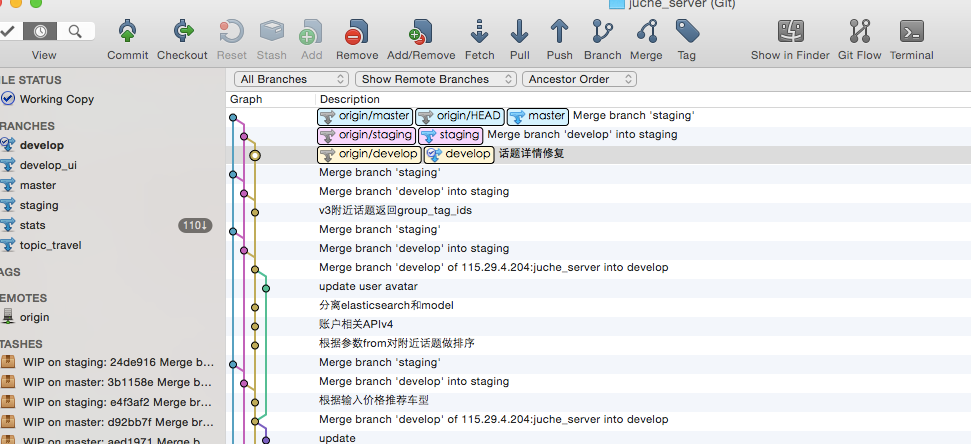
入门
- git branch
- git status
- git add
- git commit -m “message”
- git push origin master
- git remote add origin
- git clone
- git init
基础
- git pull origin master
- git merge develop
- git checkout
- git reset HEAD^
- git log –graph –oneline
- git tag
- git stash
- git fetch origin master
高级
啥？
入门
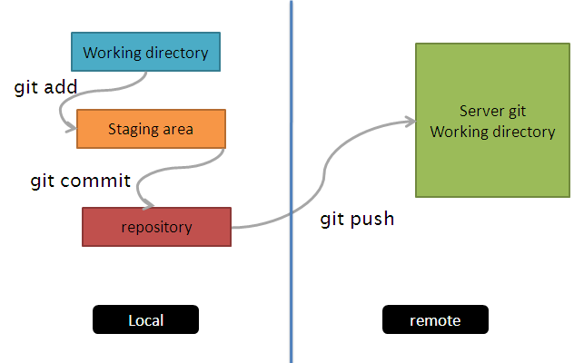
- git branch -a
- git status
- git add
- git commit -m “message”
- git push origin master
分支
git branch -a
文件状态
git status
- untracked 未追踪
- unmodified 未修改
- modified 已修改
- staged
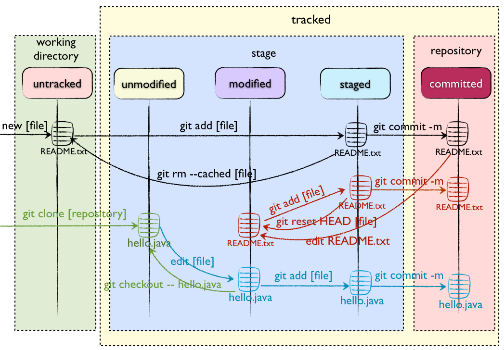
入门实践
入门实践
-
添加
git add <filename> git add * -
提交
git commit -m "代码提交信息" -
推送改动
除非你将分支推送到远端仓库，不然该分支就是 不为他人所见的：
git push origin <branch>如果还没有克隆现有仓库，并欲将你的仓库连接到某个远程服务器，使用如下命令添加：
git remote add origin <server>
新建本地仓库
-
复制远端仓库到本地
git clone <server> -
为已有代码新建仓库
git init
分支
删掉新建的分支：
```
git branch -d <branch>
git push origin :<branch>
```
基础
- git pull origin master
- git merge develop
- git checkout
- git reset HEAD^
- git log –graph –oneline
HEAD
- HEAD [ HEAD-3, HEAD^3 ]
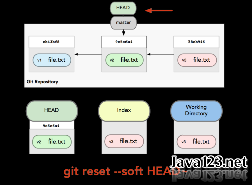
基础实践

更新与合并
git pull
以在你的工作目录中 获取（fetch） 并 合并（merge） 远端的改动。 要合并其他分支到你的当前分支（例如 master），执行：
git fetch origin master
git merge <branch>
git 会尝试去自动合并改动。不幸的是，自动合并并非次次都能成功，并可能导致 冲突（conflicts）。 这时候就需要你修改这些文件来人肉合并这些 冲突（conflicts）
git diff <source_branch> <target_branch>
替换本地改动
- 假如你做错事（自然，这是不可能的），你可以使用如下命令替换掉本地改动：
git checkout -- <filename>
此命令会使用 HEAD 中的最新内容替换掉你的工作目录中的文件。已添加到缓存区的改动，以及新文件，都不受影响。
- 创建一个叫做“feature_x”的分支，并切换过去：
git checkout -b feature_x
- 切换回主分支：
git checkout master
丢弃本地改动与提交
假如你想要丢弃你所有的本地改动与提交，可以到服务器上获取最新的版本并将你本地主分支指向到它：
git reset [--soft] origin/master
git reset --hard origin/master
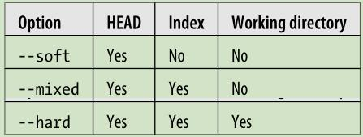
查看提交日志
git log --graph --oneline
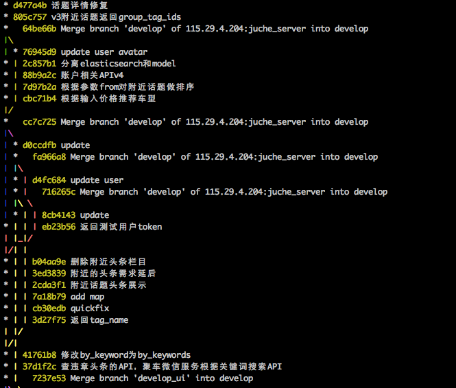
储藏（Stashing）
放入stash
git stash
- git stash show
- git stash pop
- git stash list
标签
在软件发布时创建标签，是被推荐的。这是个旧有概念，在 SVN 中也有。可以执行如下命令以创建一个叫做 1.0.0 的标签：
git tag 1.0.0 <commit>
高级
超大型项目
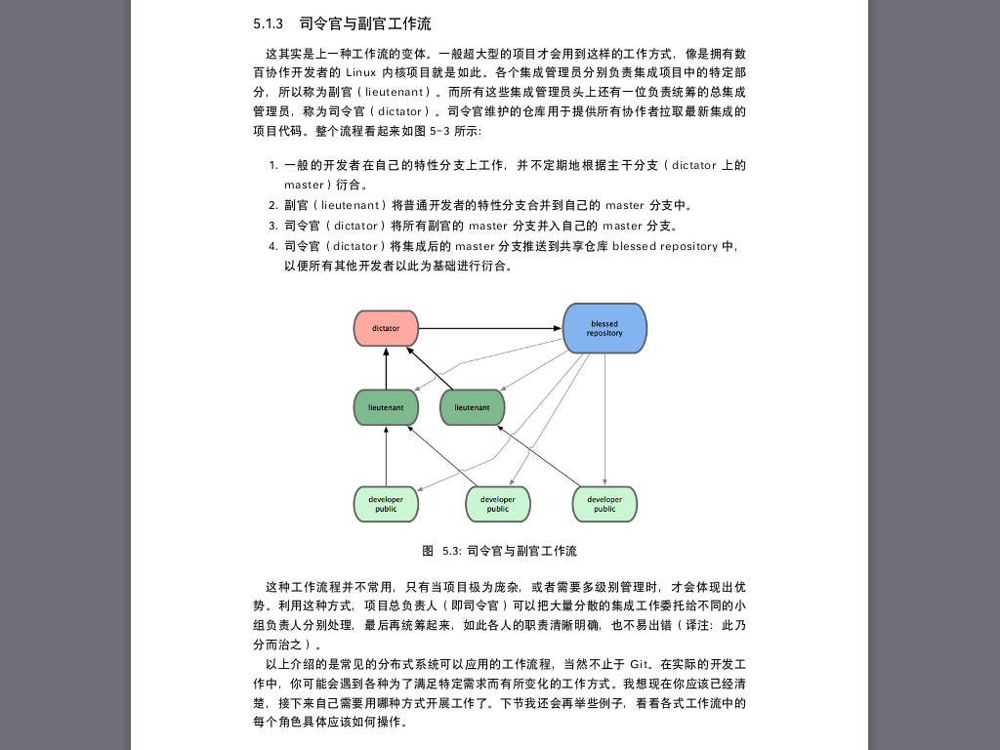
实践 git-flow
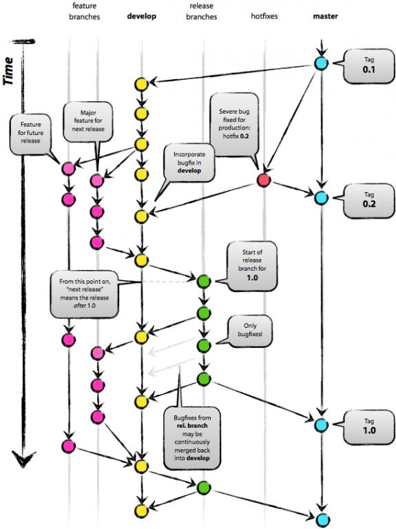
5个主分支
- master
- develop
- release
- hotfix
- feature
实践 juche_server
3个主分支
- master 线上服务器
- staging 测试服务器
- develop ci服务器
内部结构
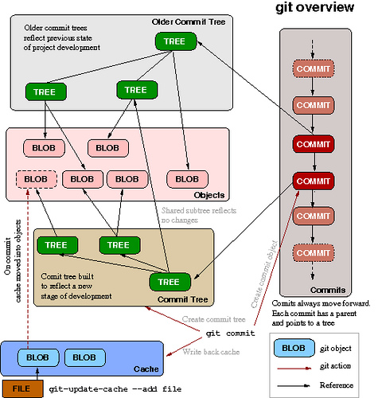
相关文件
- .gitignore
- .git/config
- HEAD
- index
- objects/
- refs/
Git对象
- commit
- tree
- blob
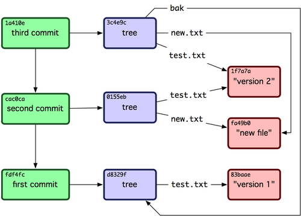
回顾-文件状态
回顾-入门
回顾-基础
回顾

提问
参考资料
- 书籍pro-git
- git-it练习
- 速查表
速查表
- 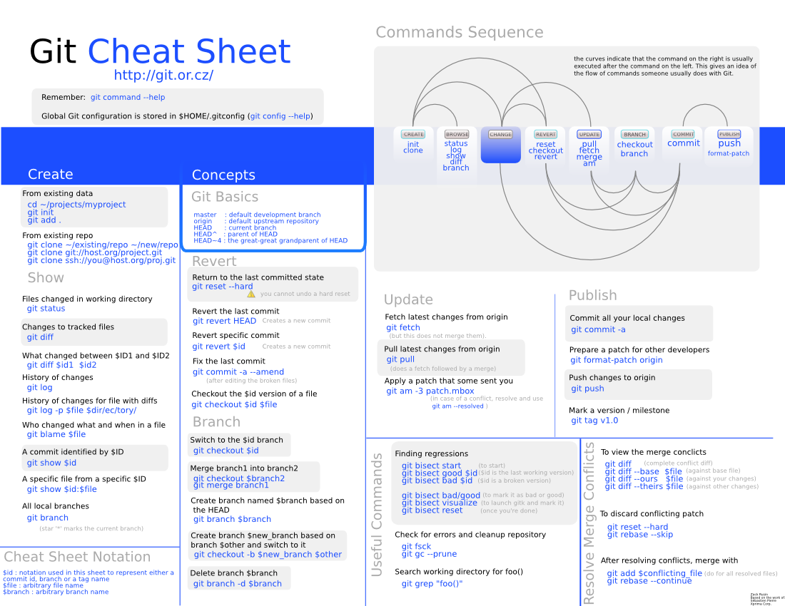
中文速查表

作业
- pro git
- git-it
- git rebase
- git revert
- git show
- git shortlog
- git blame
- git am